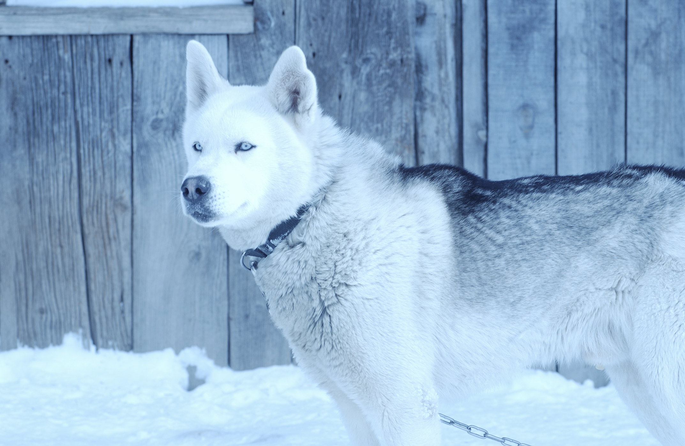

Example headline.
Note: If you're viewing this page via a file:// URL, the "next" and "previous" Glyphicon buttons on the left and right might not load/display properly due to web browser security rules.

Another example headline.
Cras justo odio, dapibus ac facilisis in, egestas eget quam. Donec id elit non mi porta gravida at eget metus. Nullam id dolor id nibh ultricies vehicula ut id elit.

One more for good measure.
Cras justo odio, dapibus ac facilisis in, egestas eget quam. Donec id elit non mi porta gravida at eget metus. Nullam id dolor id nibh ultricies vehicula ut id elit.